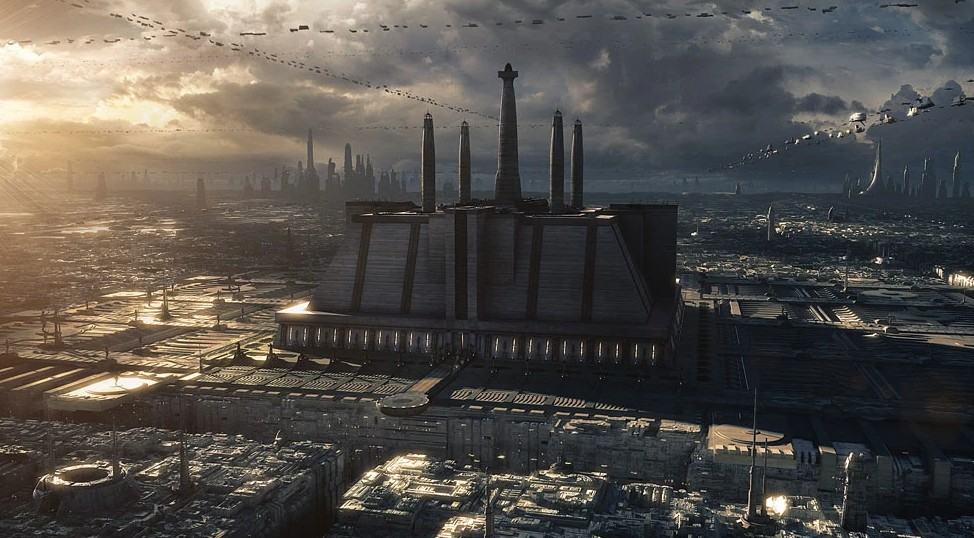
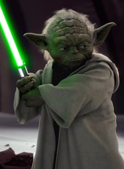
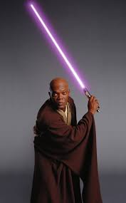

Republic Era Jedi
Before the fall of the Galactic Republic, there were close to over ten thousand Jedi spread across the galaxy. The Jedi were the guardians of peace of the galaxy. Some Jedi were more notable than others, especially those on the Jedi Council. There are thousands of Jedi to pick from, with stories of their own to tell. But we will only be discussing a few Jedi from this era. Primarly those shown in the Prequel Trilogy Movies, but there may be some discussed from the animated shows. Some Jedi that will discussed are:
- Master Yoda
- Master Windu
- Master Kenobi
- Master Qui Gon

Master Yoda
There is no better place to start than with the Grand Master of the Jedi Order. Yoda served in the Jedi Order for many centuries. Yoda was an extremely powerful Jedi, having trained many Jedi during his long life. Even training the infamous Count Dooku. Yoda even assisted Luke Skywalker when he was tasked with facing Darth Vader. Yoda also trained Luke during Luke's time on Dagobah, and helped him to become a great Jedi. For additional information about Master Yoda you may find it here: Master Yoda

Master Mace Windu
Master Mace Windu served along side Master Yoda, along with many other great Jedi. One of the few force users to have a purple lightsaber. Additionally He was one of the youngest members appointed to the Jedi Council in history. He was also one of the Jedi that went to confront Sith Lord, Darth Sidious, after it had been discovered he was the chancellor. For additional information about Master Windu you may find it here: Master Windu
